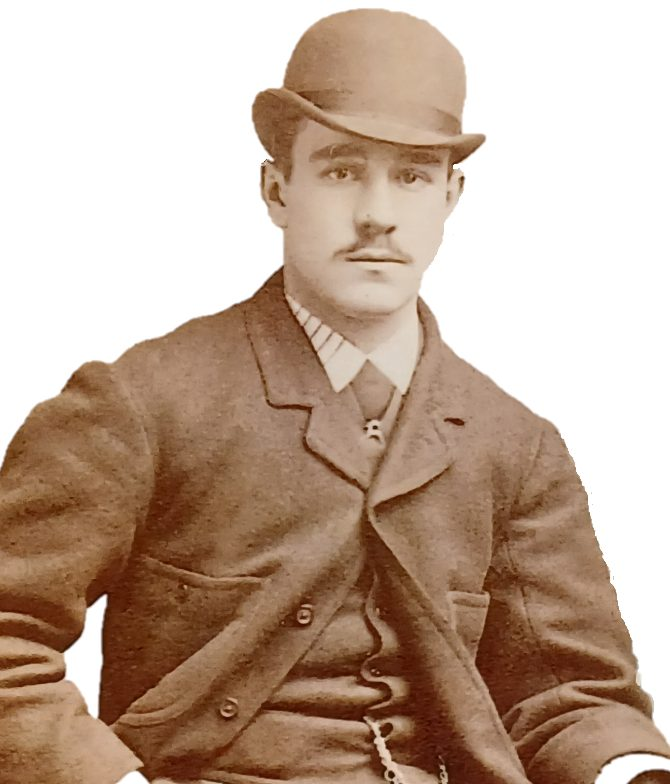
'Tis the season… when snowbirds fly south to Florida. This is the story of one man, Robert H. Coleman, who made the journey.
Humorist and author Tim Dorsey, in his madcap "Serge Storms" novels, found his calling weaving arcane facts of Florida back-roads history into tales of the life of a creative drifter and his sidekick, who coincidentally is named "Coleman" (any connection or parallels to our local hero are not to be found). Having spent years in the newsroom of a Tampa newspaper, Dorsey observed in one offering titled "Naked Came the Florida Man" how many eye-catching headlines begin "Florida man drives car off bridge while changing into swimsuit" or "Florida man dies in hotdog-eating contest."
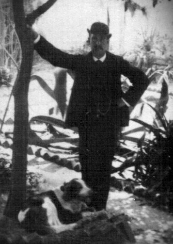
This author once met Tim Dorsey but does not recall him ever writing the history of "Robert H. Coleman, Florida Man," so I presume to do so, offering this: "Florida Man goes bankrupt on the Jacksonville, Tampa & Key West Railway." The title does not commend itself to a page-turning best-seller but I press on. I had hoped to persuade Tim to weave this "Coleman" into one of his future stories but through unfortunate circumstances, Tim passed away as this story first went to print.
Robert Habersham Coleman, beloved son of Lebanon and Cornwall, would ignore the advice of trusted advisors and risked all in pursuing his passion for all things railroads and trains.
Despite his foibles, his legacy is a life well lived, in the midst of tragedy, and for that he was and still is admired.
Florida lured many, beginning in the early 1500s when Ponce de Leon visited from Hispaniola. Its comfortable climate begged the attention of those in the 19th century just as it does today.
Robert H. Coleman certainly wasn't the first; he certainly would not be the most successful.
Florida had attained statehood in 1845 and by 1855 its legislature was granting land rights to railroad and canal companies and slowly attracted interest, distributing 1.7 million acres of land up to 1881. Then in the following year land development exploded, expanding ten-fold to 12.2 million acres. Several prominent figures led the rush.
Henry M. Flagler
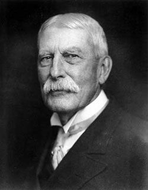
At age 53 Henry M. Flagler (1830-1913) visited St. Augustine in the early 1880s; his first wife had died and having remarried he took his new, much-younger bride on a southern trip. A resident of New York City, Flagler had established Standard Oil with John D. Rockefeller in 1870 and enjoyed great prosperity.
Up until this time, Newport Rhode Island had been the resort of the rich and famous, as early as 1729. With post-civil war economic developments in the South, Flagler and other entrepreneurs were catching the vision of bringing leisure to Florida. St. Augustine had already been known as a winter resort for the infirm. In 1878, at the recommendation of her physician, he took his chronically ailing wife to Jacksonville for the winter in hopes of recuperation. She died of her illness and in 1883 Flagler remarried, to a woman almost 20 years younger. As they honeymooned for four winter months in St. Augustine, he saw how the pleasant climate should attract the wealthy but found the old hotels disappointing, having neither luxury nor essential healthy comforts.
Flagler returned with his wife two years later in February 1885, staying in a new St. Augustine hotel, which also failed to achieve his sense of vision. He therefore undertook design and development of his famous and ornate Hotel Ponce de Leon, which finally opened in January 1888.
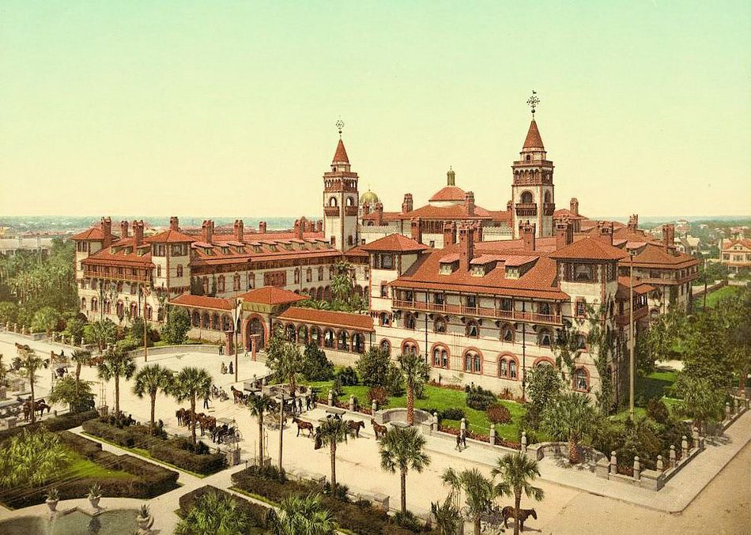
Meanwhile Flagler had acquired several other hotels and built a casino. His passion was hotels, but the condition of existing railroads deterred his vision. Poor transportation and lack of a passenger depot stunted the hoped-for growth of St. Augustine. He first bought the Jacksonville, St. Augustine & Halifax Railroad.
Eventually he would buy up other local railroads, leaving Standard Oil behind and immersing himself fully in developing the east coast of Florida. His railroad reached Palm Beach and Miami by the late 1890s and in 1905 began extending his Overseas railway to Key West, finishing in 1912, a year before his death.
Henry B. Plant
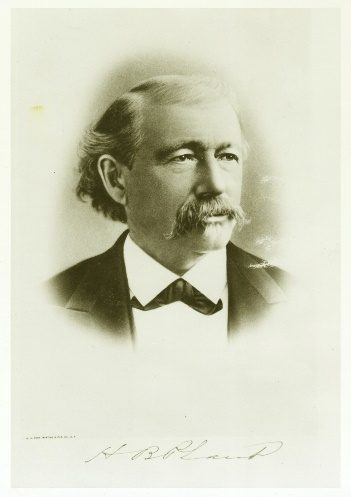
Henry B. Plant (1819-1899), from New Haven, Connecticut, started his career as a deckhand on steamboats between New Haven and New York City. He became employed with Adams Express Company, a parcel service much like modern-day UPS and FedEx (in the 1880s this same company would service Robert H. Coleman's Cornwall & Lebanon Railroad — see "Cornwall's National Guard Riot"). His role with Adams Express had expanded from steamboats into railroads, when in 1853 his wife's poor health required them to move to Jacksonville for several months. Like Flagler, Plant acquired the vision for developing Florida. He returned with his wife a second time to Florida the following year, at which time he succeeded in convincing Adams Express to expand in the south, operating out of Augusta, Georgia. Plant continued to operate the company in the south during the Civil War as the Southern Express Company.
Already familiar with the southern infrastructure (much damaged by the war) in 1879 Plant purchased the bankrupt Atlantic & Gulf railroad and organized a rail to Jacksonville. He soon acquired and developed other small regional rails, forming the Plant Investment Company, with the help of Flagler and other investors, a holding company for managing various hotel properties, steamboats and rail lines, which were known as "The Plant System." The Plant Investment Company (PICO) was based in Sanford, Florida — a destination known by anyone these days having ridden the "Auto Train" south from Washington, D.C.
Unlike Flagler, Plant focused his interests westward and is credited with developing Florida's west coast. In 1883 he contracted to extend the Jacksonville, Tampa & Key West Railway (JT&KW) to Tampa. The Tampa Bay Hotel was one of his crowning achievements.
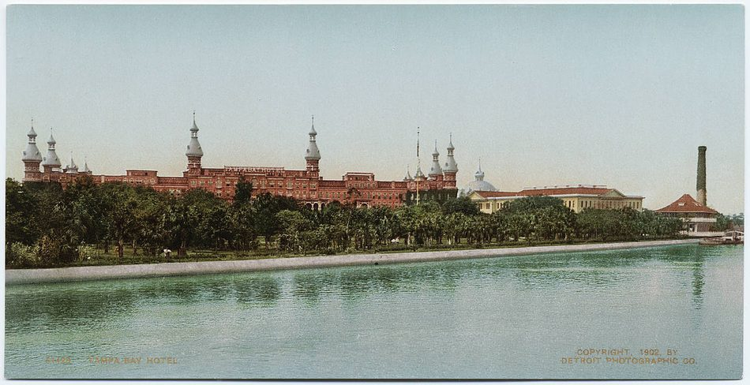
The complex details of Florida's railroad history have been written in numerous places and can be researched by even the casual reader. It is not the intention, for now, to chronicle Robert H. Coleman's history with the JT&KW railway other than to mention that after he joined up in 1881, in twelve years of expansion it went bankrupt in 1893 and after six years was finally purchased at a steep discount by Plant's "System" in 1899.
As hinted by the following 1889 map, the JT&KW had many "moving parts" involving numerous local and regional lines, and companies competing for land grants from the state governments, and wealthy investors who sought profit and control.
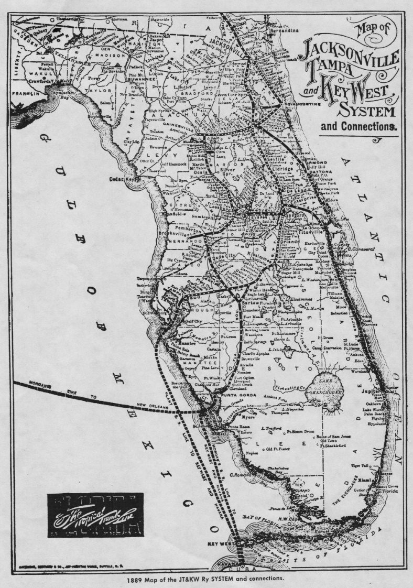
Robert H. Coleman
In spite of the yellow fevers and plagues that attended the southern climate, the rigors of northern winters brought its own health challenges to 19th century America. We take much for granted given the advances in healthcare and medicines that are now enjoyed. The wealthy had the advantage not only of travel, but time and freedom to leave northern homes for the milder winters in Florida.
And so an unsurprising pattern emerges: Like Flagler and Plant, Robert H. Coleman had been concerned about the chronic ill-health of his new bride. Much of the first year (1879) of his January 5th marriage to Lillie Clark was spent honeymooning at the Mitchell House in Thomasville, Georgia.
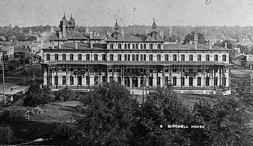
As told in the story of his sister Anne Caroline Coleman Rogers, the south, particularly Savannah, was home to the Habersham side of the Coleman family. Robert Habersham Coleman was born in Savannah, March 27, 1856, and would grow up traveling most winters back to Savannah to the estate of his mother's parents.
Thomasville had acquired a railroad during the Civil War and had a reputation during the late 1800s as the "Winter Resort of the South." Northerners came for their health, "breathing the pine-scented air as a curative for pulmonary ailments," as well as providing an active social and outdoor lifestyle. Luxurious hotels beckoned wealthy families, who soon found building "summer cottages" less expensive than renting hotel rooms. A prolonged, comfortable stay for Lillie in the southwestern region of Georgia made perfect sense to the young couple.
Robert was only five when father William Coleman died in 1861. Being raised by mother "Sue Ellen" (Habersham) Coleman, and aunts and uncles of both sides, leaves one to wonder perhaps he spoke with a southern accent, affected or otherwise. Perhaps it was a warm southern charm that made him stand out among his schoolmates, and which matured into a congenial personality that would later distinguish him among Lebanon businessmen.
In his correspondence from Thomasville with his mother and others he mentions excursions into Florida, particularly nearby Tallahassee. Earlier Habersham family trips from Savannah to Jacksonville and St. Augustine by boat have also been documented.
Though he had returned to Cornwall to take on the responsibilities of his fortune, it did not take long for Robert to also become actively engaged in Florida development. Records show that he had already become affiliated with and was a primary shareholder of the Jacksonville, Tampa & Key West (JT&KW) Railway in 1881.
He also invested $365,000 in the Florida Construction Company, which provided rails and other equipment for the JT&KW. In the company minutes of April 19, 1883, Coleman was nominated as a member of the construction company's Board of Directors. It was not as if he needed to travel to Florida to find his way into such a role; the company's headquarters was located at 120 Broadway in New York City, a city he visited frequently.
Nevertheless when Robert had become President of the JT&KW he had also taken up a residence in Jacksonville to be present at least some portions of the year.
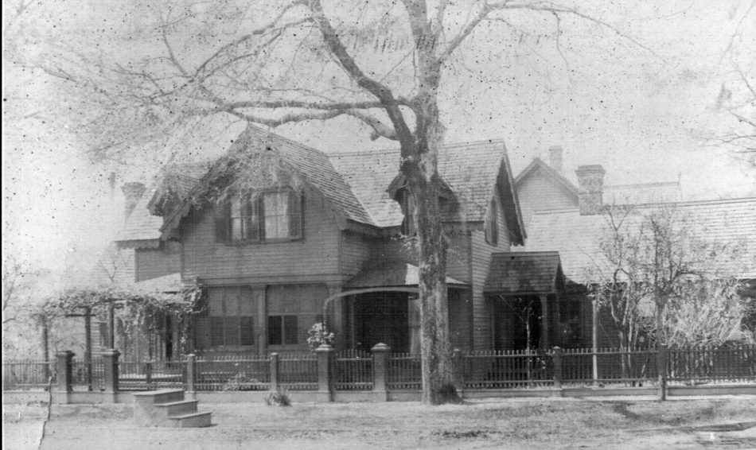
His residence and title as President of the JT&KW are as listed in the Jacksonville City directories from 1886 to 1892. The same directory in 1893 would show the railway in receivership, Robert having retired to Saranac Lake, New York. Sadly, adding further injury to the bankruptcy, the house was destroyed in the 1901 Jacksonville fire, along with many city records that might have provided further details.
Despite tragedy, Coleman retired at age 37 still a wealthy man and with the admiration of many in Lebanon. A Lebanon Daily News editorial (August 9, 1893) on his bankruptcy lauded him: "It cannot be denied that this trouble came from doing too much for others. … He was interested in the welfare of others to a great degree and became involved, and the hope is therefore expressed everywhere that the financial embarrassment may soon be removed and his affairs satisfactorily adjusted."
Part 1 of this series examined the circumstances that lured Robert H. Coleman to risk his vast fortune in Florida. In this installment, consider the circumstances that shaped the boy who became Lebanon's "iron king," with a passion for railroads.
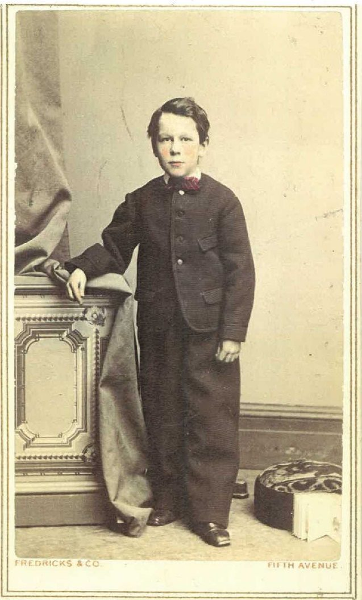
Imagine in today's world having to tell an adolescent, who barely understands the value of a fast-food meal, that he would inherit 100 million dollars. His mother and his advisors raised and coached him with as much care as they could.
The 30-million-dollar question: Why did the son of an iron family become involved not just with iron (and why not steel), but with railroads? And how could it end so badly? Voices familiar to him would materialize on the veranda of his Saranac Lake cottage, years later: "Robert, you had it made, wealth beyond imagination. What happened?"
The young man Robert Habersham Coleman was far from the hapless "Florida man" caricature mentioned in Part 1 of this story.
Though born in Savannah on March 27, 1856, Robert was truly the product of Cornwall, Pennsylvania, for it was the history and wealth of the great Cornwall Iron mine that propelled him.
Given the family iron business, one could hope to have found the young boy playing near the open iron pit with his friends, toy shovel and pickaxe in hand. There are no photographs or accounts of such play. He did write an essay about iron and other metals in 1869, age 12:
We do know (from the story "Anne of Cornwall") that he was close to his sister and they enjoyed summers in Cornwall. He enjoyed keeping pets. While he was away in New York or Savannah, caretakers looked after his horse in the family stable, along with a dog, rabbits and the like.
They travelled by horse carriage at least once per week to St. Luke's Episcopal church in Lebanon and to mid-week Bible studies with his close adult friend the Reverend Alfred Abel.
Rev. Abel was a frequent guest at the Coleman household. Mother probably encouraged that as an influence on her two fatherless children. He would routinely inquire of Sue Ellen about Robert's progress at school and write him encouraging letters. Later, in his final year at Trinity (1877) and having received his inheritance, Robert received a letter from Abel encouraging him to donate to the new diocesan school. Mother followed up, writing to remind him to support this vital work in Lebanon. The following year Abel departed to take up work for several years in Washington before returning to serve at the Children's Home in Jonestown. The spiritual influence Robert received from Rev. Abel no doubt reinforced that of his own mother.
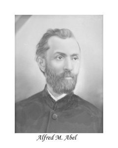
But with father having passed away, mother kept the family on the move; travel by train became the norm in Robert's life. From Cornwall it was common to ride the train to Philadelphia for shopping. Seasonally they would depart Cornwall by train for Autumn in New York City. From there by train to Washington, and to board a steamer to Savannah. By springtime it was another train and steamer to Europe with cousins, as was the Coleman family custom.
The iron industry may have been ingrained in him (see James Polczynski's "Souls of Iron"), but railroads were in his blood. Close your eyes and imagine what it felt like as a youth to see new landscapes from a train window. The rhythm of wheels on rails. Or mighty iron sailing vessels rolling on ocean swells, carrying him to the refined trains and trolleys of Europe.
A Boy and His Toys
Robert received his first train set at age 11 from his guardian "Uncle (Samuel) Small." According to a story in the Hartford Courant, he enjoyed orchestrating train crashes then working diligently to restore the damage.
Sue Ellen had sent him off by train to school in Connecticut — the Rectory School in Hamden, under the leadership of headmaster Charles William Everest. The school's greatest years were in the 1860s, which no doubt is why she sent him there in 1869, finishing in 1873.
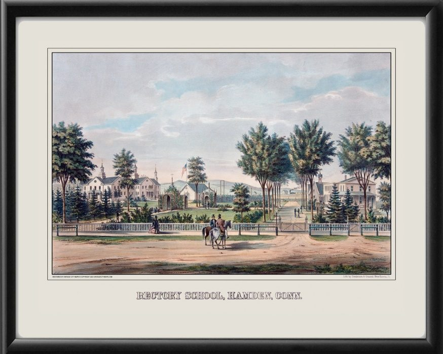
He would travel to school by train, and return to New York for holidays, having received instructions in letters from his mother which trains to board, and how to have his trunk shipped. She would routinely send him shipments of necessary supplies, edible treats and clothing, all by train. In her letters he would alternately be admonished for throwing "paper balls" during lessons, and then doted upon with promises of sending to him his favorite sled.
At age 15 he wrote home requesting a steam engine, which he earnestly wanted to buy with his allowance. He had written home, fascinated that his teacher had made such a steam engine. Mother negotiated, offering him instead a "toy boat" as a present, with hopes that he would leave his money to grow in the bank another year before such a significant purchase. He opted for the boat and within several days she wrote again that the toy was on the way. She also let him know that his gun had been repaired and returned home. All parents can identify with the material needs and wants of their children, a timeless reality.
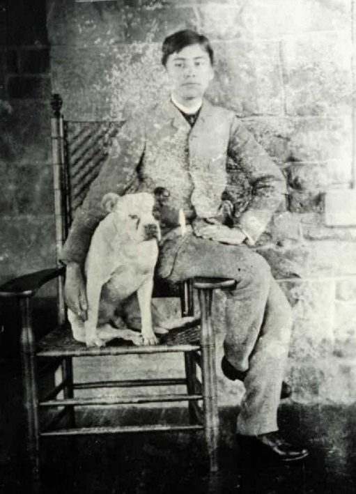
Young Robert would also have been fascinated with the steam engines at the Cornwall Iron Furnace, the Anthracite Furnace, and the Cornwall Grist Mill. Knowing his passion for machines, in another letter Mother mentions "we have a machine for boring the ore hills to find out how deep the iron ore lies. You will be much interested in it I am sure and I hope you will find out all about it and explain it to us."
In 1873 he returned to Connecticut to attend Trinity College in Hartford, already accustomed to the routine of train travel. Mother's and Sister's correspondence with him repeated the same patterns as before. By the end of that year he had won the battle of the steam engine, for Mother wrote from Cornwall that not only his engine but also his organ were in good working order and ready for his return for the summer. The engine remained important to him, as it was mentioned several times in correspondence the following year. His Uncle John Rae, while visiting Cornwall, enjoyed being in Robert's engine house; "all is quiet," he wrote, referring to some of his trains.
It was also in his first year at Trinity that he spent some of his allowance on a telegraph machine. Much more than a simple telegraph key, the machine was a fascinating contraption enabling both transmission and reception, with a clock-like mechanism for recording the message on paper tape.
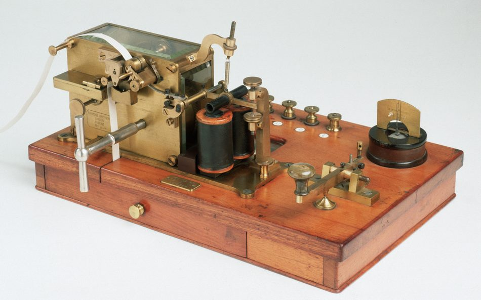
Robert understood the telegraph as a necessity as a young person today would understand a cellphone. The telegraph was everywhere: in how many train stations did he see one in operation, and how many times did he receive telegrams from home? The Colemans were accustomed to wiring orders for supplies from merchants in and out of town, a precursor to our enjoyment of on-line purchases.
Mother reacted to the purchase in a letter: "I don't think you have been too extravagant, except for purchasing [the machine]," and proceeded to exhort him to follow the better example of his room-mate. "The only fear I ever have for you is that you may not study enough and may become extravagant." Prescient words lost on a young man who would finish college near the bottom of his class and later suffer tragic financial failure. An extravagance? Yes, for he would not have been able to connect it to the greater world. Nevertheless he cherished it and savored learning the code that enabled trains and commerce to move.
Prior to his final year at Trinity, the Great Philadelphia Centennial Exposition of 1876 captured Robert's attention. Anne wrote to him describing its many displays and especially the Machinery Hall, which featured all kinds of engines, trains, and an organist providing music, which she thought Robert would especially enjoy.
The Exposition has been described as the first world's fair held in the United States, a grand event presumably patterned after Prince Albert's "Great Exhibition of the Works of Industry of All Nations" of 1851.
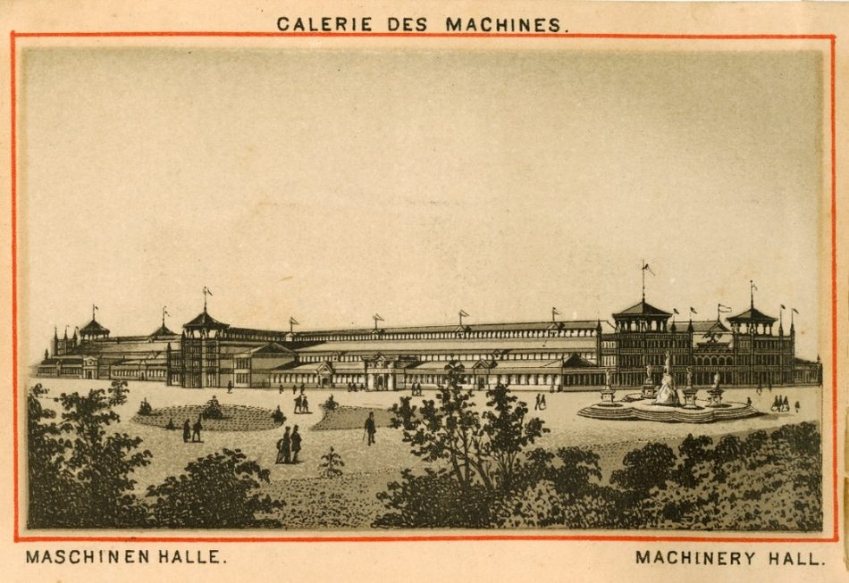
The Philadelphia exhibition was sponsored by the sale of $10 shares of stock. The following image shows forty-three shares issued in 1872 and held by Samuel Small, guardian on behalf of Robert and Anne Coleman.
Like Mother, Samuel Small discouraged extravagances, but an investment equal to $12,600 in today's currency was deemed worthwhile to inspire their young minds.
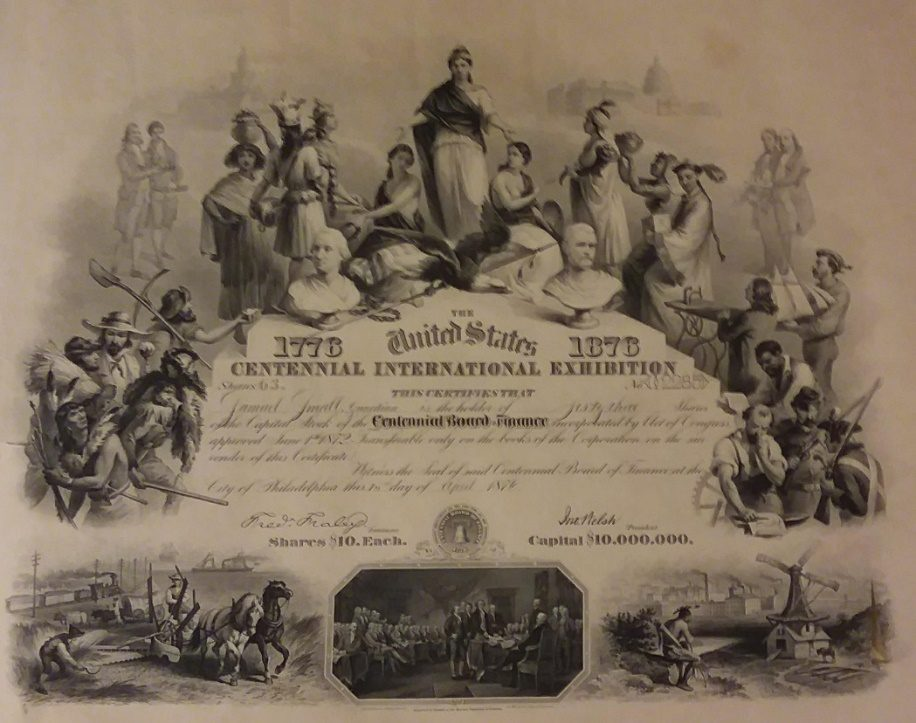
Later, Coleman relived the experience by hosting with others the Florida SubTropical Exposition, promoting commerce for Jacksonville, Florida (1888-1891).
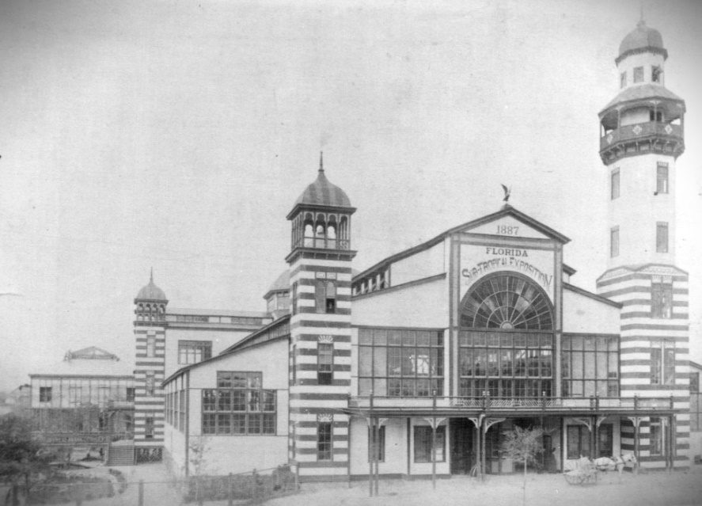
Model Trains Passion
In 1877 Robert turned 21, achieving "majority," which opened to him the wealth of his inheritance. With his mother's guidance, in addition to generous contributions to Trinity College, he soon began improvements to "The Cottage," and built an organ conservatory for himself.
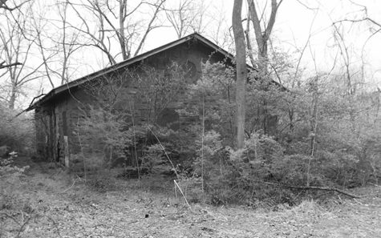
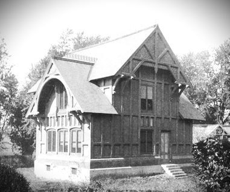
Not only was Robert's adult life "picking up steam" but also his recreational interest with trains. Enjoying free time when he could, he built a model train shop to house improvements to his model trains, which included tracks on the floor, and bleachers for his guests.
In 1879, he contracted with an Atkins Stover of Greenpoint, Brooklyn for three rail cars and repair of his French locomotive for $60 (an $1,800 value today). Additionally, he spent $800 ($24,000) to build a large-scale model engine, which had many working features including a vapor lamp that burned alcohol. The model engine has survived the years and was displayed at the Lebanon County Historical Society in 1990.
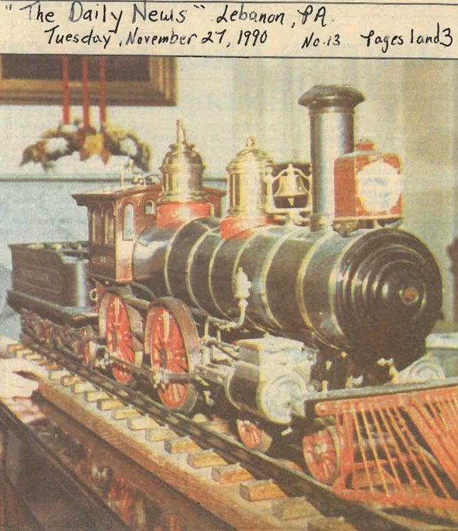
Stover was having difficulty, not with the engine but in tracking down young Robert H. Coleman to have him witness the engine running. Married in January of 1879, Coleman and his bride were hard to locate between visiting Europe and honeymooning in Georgia. A letter from Stover finally reached Coleman in Thomasville, Georgia in June. He provided instructions on operating the boiler, and wanted to know where to make final delivery of the new engine.
Trains as Therapy
By the following June, Lillie would be dead. A Lebanon newspaper story gave an account of Robert's state of mind and the solace he sought with his model trains and his fascination with the technology of the day.
The story was carried in several Pennsylvania papers in 1881:
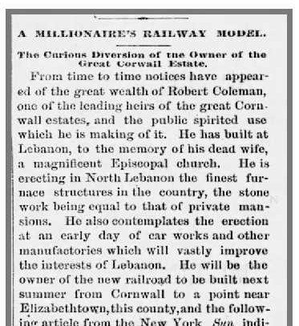
Trinity College Generosity
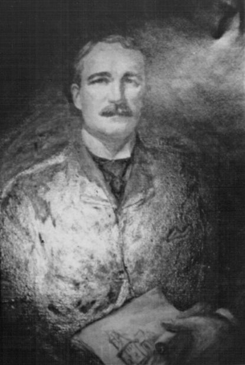
Robert by no means spent his vast wealth only on model trains and other forms of personal gratification. Having pledged to Trinity's Delta Psi fraternity, on graduating he donated $28,000 for a new chapter house when the campus moved from the current site of the capitol. He also gave a new organ for the Chapel in 1878 and in 1887 donated $10,000 for a new college gymnasium.
Much later, the Trinity College alumni office would memorialize Coleman's life as divided into two parts of 37 years each: "action" and "exile." Honored at the time for his generosity and public spirit, after 1893 he never returned to Trinity.
Early Business Pursuits
Coleman was not simply idling his time of new-found wealth enhancing his mother's "Cottage," traveling to Europe, sponsoring the Cornwall baseball league or tinkering with his model trains. In 1880 he was busy building an exquisite mansion in Cornwall for his new bride. And, he was stepping up to the role of managing business, mostly through his general manager Artemas Wilhelm. In October 1879 the Lebanon Daily News first reported ground-breaking on his two Colebrook furnaces in west Lebanon, managed by Charles Forney. Other correspondence records conversations about researching new hot-blast equipment for furnaces.
Proposals arose for a rail connection from Elizabethtown to Cornwall for transporting ore westward on the Pennsylvania railroad. In June 1882 Coleman would start building his Cornwall & Lebanon railroad in Lebanon, soon employing 800 men to connect it to Conewago; this endeavor also leading to the creation of one of Lebanon county's treasures, the Mt. Gretna campgrounds.
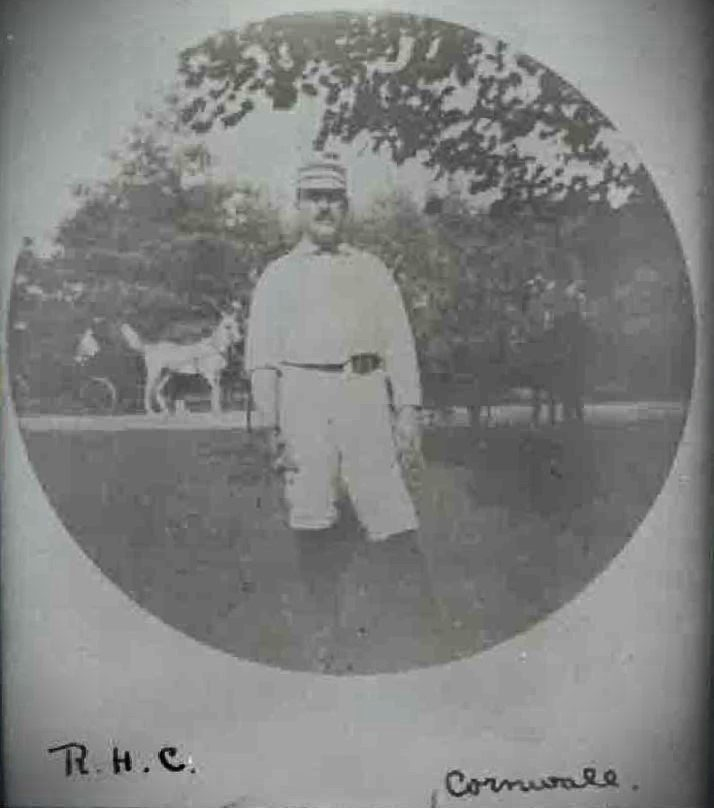
At age 31 Robert H. Coleman was honored at a banquet so elaborate that even the exquisite floral pieces were imitations of his Cornwall & Lebanon Railroad depot and its locomotives. The dinner, held on the evening of August 2, 1887, was a "testimonial of the appreciation of the citizens of Lebanon of the substantial aid he has given the city in its path of progress by his enterprises and liberality." On that evening 140 gentlemen sat down in the large dining room of the Eagle Hotel under the "brilliance of electric light" and with music by Lebanon's Perseverance Band. The honored guests included General D. H. Hastings, state adjutant general and Gen. Hartranft, commander of Pennsylvania National Guard, and many city officials. The news story painted a picture of Lebanon's renaissance, celebrating the old but ushering in a new era thanks to Coleman's insightful leadership, and praised his easy-going nature.
In his remarks Coleman observed how in seven years Lebanon's population had more than doubled to 16,000 thanks to the expansion of furnaces, mills, factories, railroads. He appreciated the friendship of so many citizens, and with their support he expected the city to grow to 25,000 in another seven years. (Note: In fact it took until the 1920s for the city's population to reach 25,000, thanks to Bethlehem Steel. It remains today at 26,581. The population of the entire Lebanon County is about 143,500, these numbers from Census.gov.)
Nine toasts extended the banquet into the early morning hours, congratulating not only Coleman but celebrating a litany of Lebanon's excellencies, from industry to education.
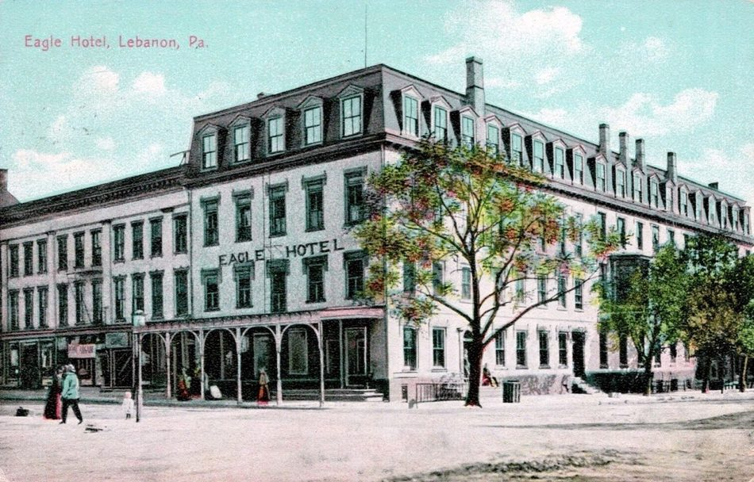
How was Robert H. Coleman admired by greater Lebanon? Here is a brief scrapbook of his press clippings:
- January 17, 1877 — Artemas Wilhelm, representing the Coleman heirs, donated 500 tons of coal for distribution to Lebanon's poor, through Lebanon's Howard Association (a national charity named for British philanthropist John Howard).
- September 10, 1879 — Robert purchased land in Lebanon, to become the location of the new Colebrook furnace, the beginning of various industries that would employ hundreds of workers.
- October 1, 1879 — At age 23 Robert H. Coleman was elected President of the Cornwall Ore Bank Company.
- June 1882 — Coleman employed 800 men extending the Cornwall & Lebanon railroad to Conewago.
- January 30, 1883 — Robert and Mrs. Arthur Brock hosted an exhibition at the Old Weidman mansion on North 9th Street. His 38 items and her 12 (see Profound Possessions) resulted in significant contributions for the Free Circulating Library of Lebanon.
- June 25, 1884 — He sent a carload of plants to residents of the Colebrook furnaces in Lebanon. Thousands of flowers in each yard and garden "evidencing Mr. Coleman's kindness and interest in his employees."
- July 2, 1884 — St. Luke's Episcopal Sunday School and choir picnic held at (Coleman's) Mt. Gretna. Mr. Coleman gave his laboring men at Cornwall a picnic after the harvest.
- July 9, 1884 — Coleman hosted a Grand display of fireworks in Cornwall, for the gratification of the public.
- August 20, 1884 — Cornwall Anthracite Furnace and farm employees with families enjoyed a picnic at Mt. Gretna.
- January 28, 1885 — Robert H. Coleman presented a plot of land adjoining the cemetery in Cornwall for the Salem Lutheran Church.
- July 1, 1885 — He held a picnic for employees of Cornwall Anthracite furnace and farm hands, with music by the Perseverance Band.
- February 27, 1886 — Coleman surveyed 10 lots along the south side of Horseshoe Turnpike, east of Bismarck, for building purposes. The largest lot to be for the Cornwall School District school house, "to be known as the Robert H. Coleman addition."
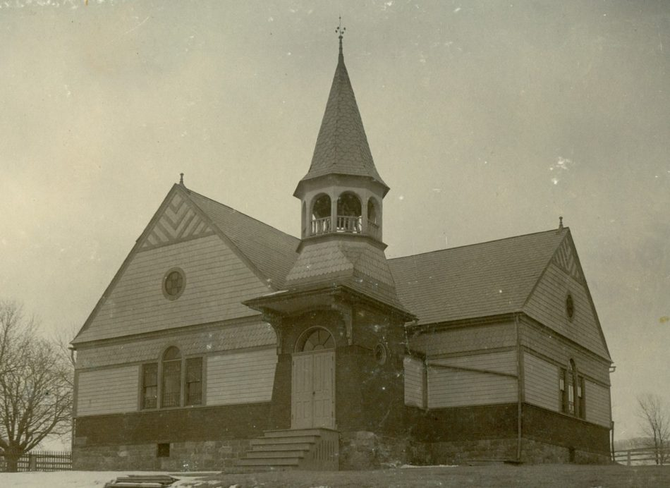
Robert found time to relax in his organ conservatory, playing an instrument that he enjoyed in college and even in earlier years. This of course not just any "instrument," but a piece of machinery with plenty of controls, a wide spectrum of voices, and even a water-powered mechanism in the basement to produce the sounds.
He would host organ concerts for friends, employees, and their families. And in quieter moments he found time to compose at least one hymn, shown below.
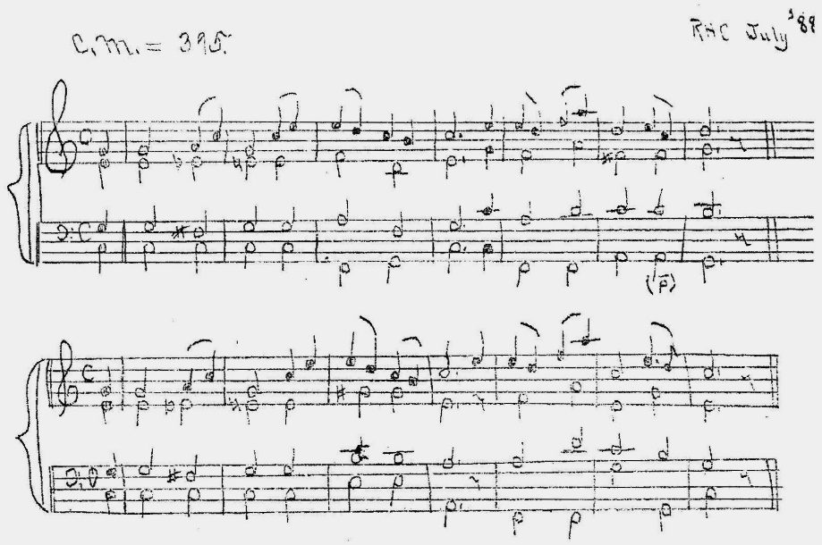
Coleman's admirers marveled how he multiplied his inheritance roughly ten-fold in as many years. The key to his success was probably not innate business genius, but his generosity. Just as with his contributions to the buildings of Trinity College, his wealth made him many friends in Lebanon. The other important factor influencing his success was the wisdom of his advisors, foremost Artemas Wilhelm and his childhood guardian Samuel Small. His pastor friend, Alfred Abel, having returned to the region, also provided a steadying influence.
Artemas Wilhelm (1822–1887)
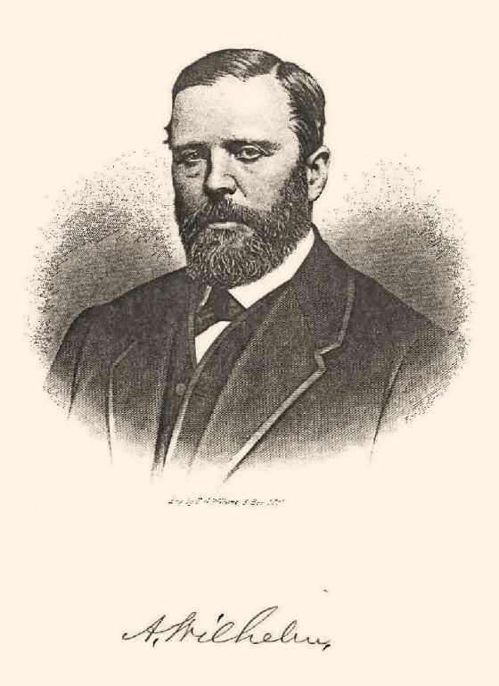
Artemas Wilhelm, who died just a month after the grand banquet, had been associated with the Colemans since the 1840s. He and his father built the first hot blast furnaces in America and built the Anthracite Furnaces in Cornwall. He then designed and built the North Cornwall, Bird Coleman and Colebrook furnaces.
He became manager of the R. W. Coleman Heirs estate until turning it back over to Robert H. Coleman in 1882. In various correspondence he provided frequent counsel to young Robert, advising him to balance caution and risk in managing his affairs. Soon after receiving his inheritance in 1877, while still in Connecticut, Robert sent Wilhelm a check for $5,000 as a "token of his esteem for all that Wilhelm had meant to him and the family." Wilhelm responded with profuse thanks and hopes to speak with him at Cornwall regarding various business interests.
For the next few years Robert leaned on his advisor for all manner of advice, including the purchase in December 1877 of a seemingly frivolous set of elk heads and antlers. That same month Wilhelm wrote to mother Sue Ellen, thanking her for another cash gift (he had been managing the renovations to her "Cottage") and acknowledging the transition of their business arrangement from her to Robert, "for whom it will be my great pleasure to watch his interests carefully as I have done since he was a child. Now that he has attained manhood, I feel more than ordinary solicitude for his successful career through life… he will need the counsel of good friends and I shall ever be ready to aid him with advice in every way that I can."
By the end of the same month, acting as his power of attorney, Wilhelm encouraged Robert to be present in January for stockholder meetings of the Cornwall Railroad and the Cornwall Turnpike. Samuel Small would be vacating his seat as director so that Robert could be elected in his place. This may be the beginning of Robert's introduction to business (even so Robert remained busy enjoying his wealth, with elk heads, purchasing an $8,000 water-powered Roosevelt organ for his conservatory and buying Christmas gifts for friends, including a ring for cousin "Minnie" — Margaret Coleman Freeman).
The following year (September 1879), Robert was also elected president of the Cornwall Ore Bank Company.
21-year-old Robert began receiving unsolicited requests from strangers for charitable donations. Fortunately, he was wise enough to confer with Wilhelm, who congratulated his caution, replying "no one who is not possessed of the brass of Satan would ever assume to address such a communication to a stranger. I am glad you view it in its proper light. If you ever commence similar donations, you will never live to see the end of them."
Wilhelm was at the ready with other financial advice, such as recommending a low-risk secured loan of $25,000 to Wm. Kaufman for his firm at Sheridan furnace. Wilhelm continued to manage the furnaces for the family, corresponding as financial secretary to Robert by sending his $23,000 share of surplus funds from sale of iron but warning him that the market is depressed.
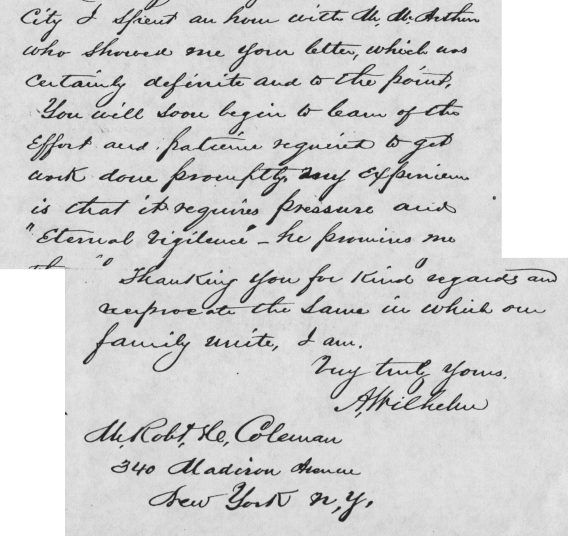
The abundance of correspondence between Coleman and Wilhelm, too much to cover here, merits a story of its own. For now, this: Artemas Wilhelm congratulated Robert for having written a corrective letter to architect McArthur "which was certainly definite and to the point. You will soon begin to learn of the effort and patience required to get work done properly. My experience is that it requires pressure and 'Eternal Vigilance.'" It was not Robert's personal business acumen but the strong voice of his wealth that kept the attention of those working for him. The familiar adage "surround yourself with skilled people" was his secret for his early success.
This advice had come directly from Wilhelm (April 1880): "My further advice is don't you ever undertake the management of the details that can only be done by those whose constant and unremitting attention is required. You will have most ample to do by giving general advice and a general supervision over your individual as well as your joint interests. Your trusteeship will also add to occupy your time and labor. Many men would say that interest alone is enough for any one man to look after."
Although there is a view that Wilhelm and Small disagreed on advising Robert, Small being conservative ("always protect the principal, invest the profits") and Wilhelm advising calculated risks, they were nonetheless good friends. However, Wilhelm wrote Robert in 1879 while encouraging him to enjoy his income to not forget "the advice I have always given you: Spend your income but keep the principal unimpaired for any emergency which may arise and you will always be in a position to protect yourself."
In April 1880 Wilhelm writes concerning a disagreement between Robert and his Freeman cousins, that the Coleman business strength was the harmony of family members. "I will always advise harmony and united interests … which underlie your impregnable strength." In the same letter he mentions having a delightful visit from Samuel Small, staying at his house for a short time.
Samuel Small
Robert's guardian Samuel Small, successful York businessman, admonished Robert to be judicious in his dealings. He was told to protect the principal of his inheritance as there was plenty of income to finance his endeavors. When Robert's southern grandfather Robert Habersham died in 1870 (Robert 13 years old), Small writes "No doubt you have heard of the death of your Grandfather, a man who was highly esteemed and respected for his virtues, a man who was ever ready to do for the poor or anyone in need."
Small was also a good businessman, therefore he urged Robert to copy his example, given his own fortunate position; and not be "careless, dissipated, fond of frolic… I expect a great deal from you, believing that you will be sober, honest, industrious, kind to all around you, a man capable of conducting any business. To this end you will not lack the means. God gives it to you as a Steward, and he will have you improve the talent he has committed to you."
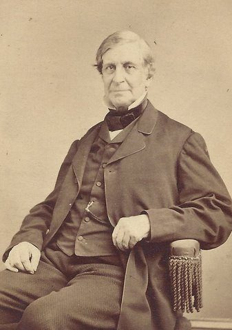
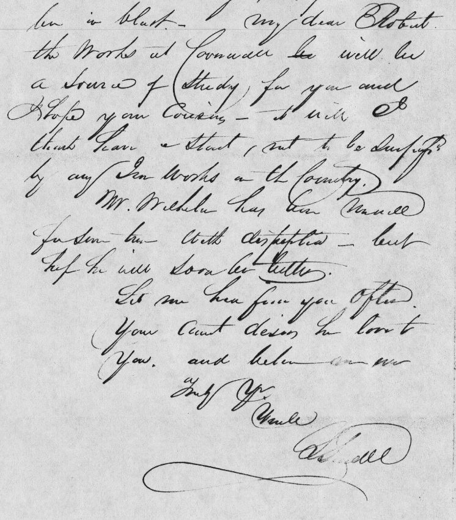
A few years later when Robert attended Trinity, Small encourages Robert to learn well at college and "make his mark in the world," whether mechanical, scientific, or religious. He warns against "sensual" pleasures and reminds him of Psalm 37. He exhorts further, "My dear Robert the works at Cornwall will be a source of study for you."
And on entering his final year, Small's advice to Robert about the significant wealth he is inheriting: "I would advise saying nothing about it to anyone, except your Mother, and avoid every manner or remark which might give persons an idea that you are elated or purse proud. There is so much for a young man in your situation to withstand by way of arrogance and temptation, that everything should be done to give no occasion. … College life I have always thought was a dangerous one, full of Sinning. The Bible says, 'Stand not in the way of Sinners nor sit in the seat of the Scornful.' … Pray to Our Heavenly Father for wisdom to guide and direct you."
Small continued to act as advisor and power of attorney on some financial affairs for several years after Robert attained his majority in 1877, possibly until his death in 1885. He encouraged the prenuptial agreement to protect sister Anne's finances in marriage. Small frequently encouraged Robert to remain true to his Christian faith, shaping his business decisions on religious principles.
When Robert (or his mother) had disclosed plans for the new house to be built in Cornwall, Small worried "I fear you are going to make a mistake by building it too large." From the vantage point of today we watch in horror as he overextends.
Robert H. Coleman, Pennsylvania Railroad Man
As mentioned, in 1878 his advisors steered him to a director's chair on the Cornwall Railroad, a company established 1850 as a collaboration by his father William Coleman and G. D. Coleman of Lebanon. They had joined forces to ensure the transportation of Cornwall iron ore to the Union Canal and to the North Lebanon furnace.
Wilhelm reported to Robert that he had been in communication with the Pennsylvania Railroad in 1880, which wanted to build a connector from its line near Elizabethtown via Colebrook to Lebanon. He convinced the officers of that railroad to give Coleman control of the project. This led to the establishment of the Colebrook railroad, providing more efficient transportation of Cornwall ore west to Pittsburgh.
At the same time, Coleman was establishing his Cornwall & Lebanon railroad to enable transportation of Cornwall ore to his new Colebrook furnace. The two projects soon merged, and Coleman became president, the primary shareholder.
Work on the railroad to Conewago from Cornwall began in 1882 and finished October 1883. By the following year the picnic grounds were being developed at Mt. Gretna, and in 1885 Coleman provided land for the first National Guard encampment.
Coleman found time to tinker with the features of Mt. Gretna including damming Conewago creek to form Lake Conewago, and adding amusements that included a steam-engine operated merry-go-round called "The Flying Menagerie."
The stories of competition between the Cornwall, and Cornwall & Lebanon railroads are well known (see Cornwall's National Guard Riot). The tracks of the two companies originally had crossed peacefully in Cornwall, although with two separate stations. Arguments over safety and maintenance of the crossing led to Coleman erecting Cornwall's train bridge and the elevated grade heading southwest to Mt. Gretna.
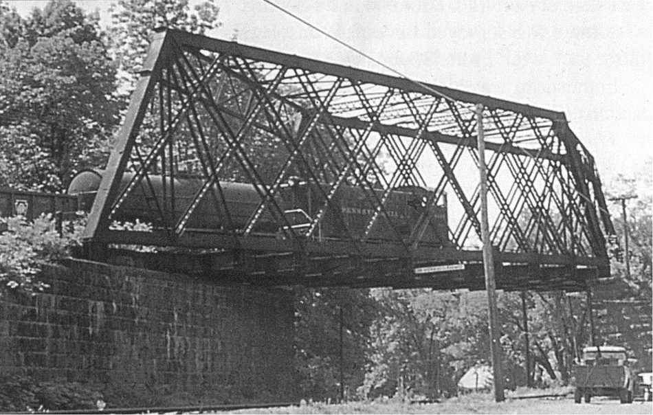
Robert H. Coleman, Inventor
As historian Jack Bitner reported, Coleman's experiments in his workshop on steam engines led to the idea of erecting the narrow-gauge railroad to the summit of Governor Dick. Surveying began early in 1893 and by the end of June the road was completed and ready for the grand opening on July 4th. It was immediately popular; and tens of thousands of passengers rode the train in 1893 and 1894. The excitement wore off quickly and several accidents caused the road to the top of Governor Dick to be abandoned at the end of the year (Robert himself was already removing himself by this time to Saranac Lake). The portion of the Mt. Gretna railroad that served the National Guard and the rifle range operated until 1915 and was torn up in 1916.
In his spare time Coleman took on the serious problem created by sparks exhausted from the stacks of his wood-burning steam locomotives. Various historical reports describe trains erupting showers of sparks. In the early years of railroads passengers in open cars would have to help one another dampen fires in their clothing. In 1800 Harvard professor Charles Sargent had reported the third leading cause of forest fires was cinders and sparks from passing locomotives.
Coleman worked the problem, eventually coming up with a design for a spark arrestor for which he received patent #387,623 dated August 14, 1888, "Method of Promoting Combustion and Extinguishing Sparks," a three-page document explaining the concept of "his" design, which was for wood-burning locomotives. The benefit was two-fold, improving fuel efficiency and greatly reducing the emission of sparks.
Truly "necessity became the mother of invention." In January 1888 he wrote a letter to the Baldwin locomotive company explaining his experiments. The JT&KW was the only road in the South using the front end with straight stack with wood for fuel. The spark problem was pressing them to abandon that type of engine, but they had a fleet of twenty such locomotives to keep in service.
He had Engine No. 9 sent to the shop as a prototype for experiments in Florida. Meanwhile in Cornwall he was having the design put into one of the Cornwall & Lebanon locomotives to test the efficiency of the concept on a coal-burning engine.
In July 1888, General Superintendent of the JT&KW in Florida wrote to Coleman at Cornwall reporting on progress, and that his engineer E. T. Silvius was making progress with experiments and adjustments to the design. Within a month's time, the patent was awarded.
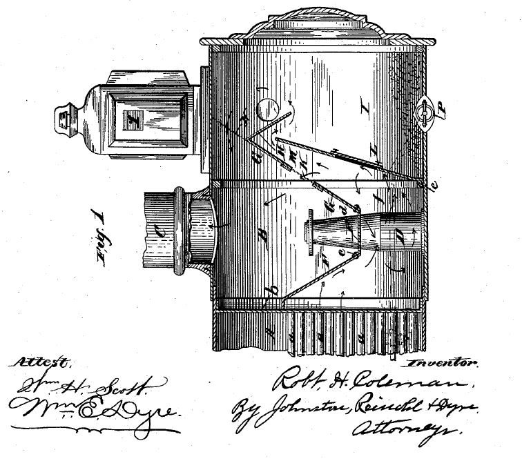
Robert H. Coleman, Bank President
In 1884 (age 28) he erected an exquisite building in Lebanon to house the offices of his railroad company, his Colebrook furnaces, and the bank of which he had become president.
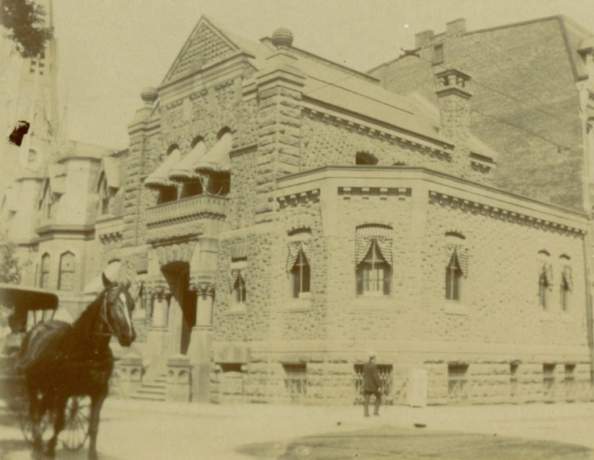
Lebanon's Dime Savings Bank was organized March 14, 1871, at the SW corner of 8th and Willow. Coleman had been a director of the bank since June 1879, when Wilhelm purchased 93 shares for him from the retiring president. After he built this new building at 8th and Cumberland, the bank moved two blocks down. The following year the bank petitioned to change its name to Lebanon Trust and Safe Deposit Bank.
The newspapers raved over the architectural beauty of the building: its brilliant electric lights were not powered by water, but by a steam-driven dynamo; steam also being the source of heat. In addition to its sturdy limestone foundation, the building and its vault were fireproof, assuring its depositors of the security of their savings.
Winding Down…
Boyd's Lebanon City Directory 1891-1893 listed Robert H. Coleman as president "of the Lebanon Trust and Safe Deposit Bank, and the Cornwall & Lebanon Railroad, and the Lebanon Iron Co.," as well as "proprietor of Colebrook Furnaces, Offices and safe deposit vaults, at 8th and Cumberland." In addition to these achievements are the development of Mt. Gretna, his farms and livestock, interest in several racehorses (the subject of a future story), his recreational baseball team, and hosting the Pennsylvania National Guard.
If all of Coleman's activities in Lebanon county don't make your head spin, consider that as early as 1881, having lost his young bride just a year before, he ALSO involved himself in land and railroad development in Jacksonville, Florida.
In 1889 the Lebanon Daily News cited an article in The Forum, placing Coleman in the $30,000,000 class, ahead of J.P. Morgan, Marshall Field, A. J. Drexel, F.W. Vanderbilt, among others. Oddly, history books, and an internet search of "industrial tycoons of the 1890s" fail to mention him.
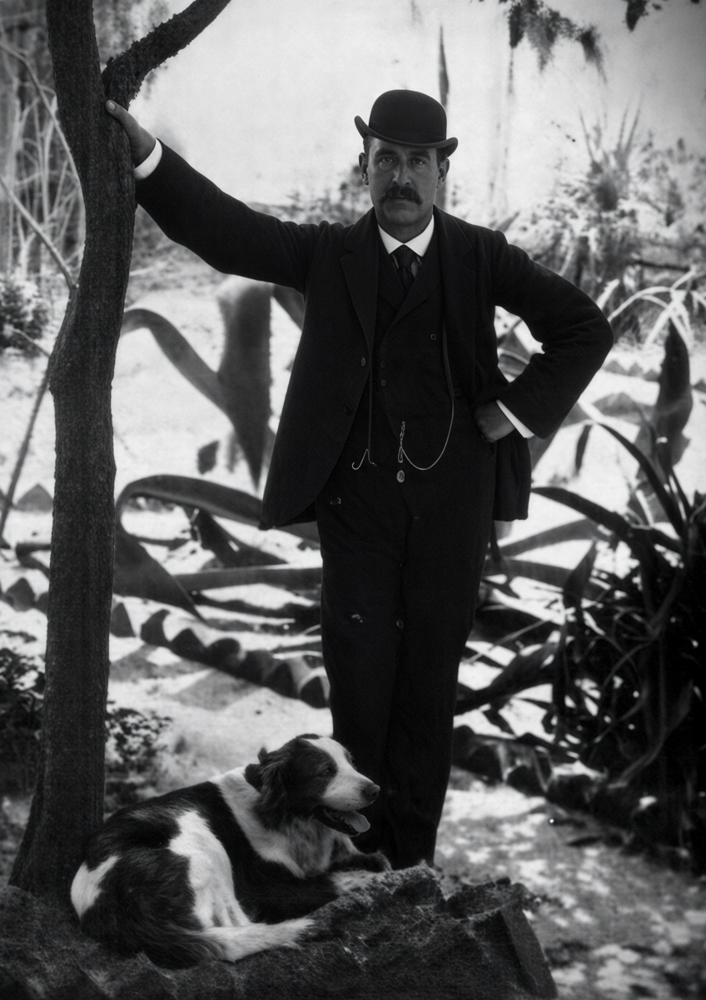
An earlier account from February 1881 described Robert H. Coleman as managing his grief within the solitude of his model train workshop. But in addition to all that he was undertaking in Cornwall and Lebanon, later that same year his attention was drawn to land and railroad development in Florida.
As mentioned in Part 1 of this series, the Florida state government was offering incentives to spur development, namely: a railroad company was granted 13,400 acres of land for every mile of track laid. Investors, including Coleman, found this a proposition not to be missed.
Robert H. Coleman had become a director of Flagler's Jacksonville, St. Augustine and Halifax railroad, chartered in February 1881. Over the years they would meet often at Flagler's Ponce de Leon hotel.
Another railroad, the Jacksonville, Tampa, and Key West (JT&KW), incorporated 1878, had been a modest success, its route following the St. Johns River, offering direct competition with the steamboats, but faster and with greater connections to more distant points. The low cost of water transportation forced the company to keep its rates low, but the JT&KW had grown enough to pose a threat to Flagler's small Jacksonville, St. Augustine and Halifax railroad that served his hotel empire, so through various stock trades he gained control and merged it into his company.
According to George Pettingill's "Story of Florida Railroads" the new company incorporated June 27, 1881 with $2 million of capital and Robert H. Coleman heading the organization as president. It began surveys of a road from Jacksonville to Palatka, which started construction in March 1883, and was operating by March 1884. It would open more lines in the coming years.
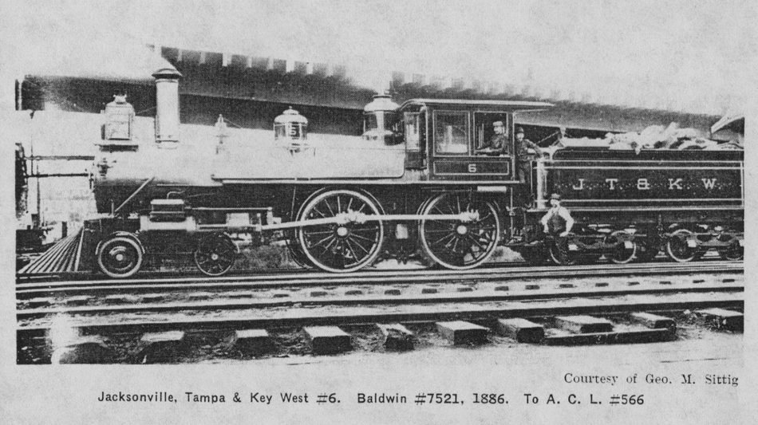
The young railroad president enjoyed favorable press in Florida. A reporter found him in his office in his home at Duval and Market Street to answer a question about a new office building for the railroad. Coleman was "a very agreeable and entertaining talker" able to answer pointed questions with confidence and optimism about the benefits of capital investment to the growth of Florida, for the benefit of everyone.
Board members of the JT&KW formed the separate Florida Construction Company (FCC), which sold needed materials and rolling stock to JT&KW. Coleman subscribed to a significant number of shares in the FCC, investing $365,000 in March of 1883.
The JT&KW prospered and had acquired 1.5 million acres as it expanded. The line to Palatka was prospering soon after it opened in 1884. The discovery of phosphate in Florida led to significant mining operations, requiring ongoing improvement of the railroads for transporting the material. With the assistance of Henry B. Plant's investment company, the line across the state to Tampa was completed that same year.
One newspaper account, St. Louis Globe-Democrat, 24 May 1886, praises the "enterprising capitalists of the north" for developing the state of Florida, improving drainage, building roads and communities, employing thousands of laborers. Calling them "true missionaries to the south," it cited in particular the directors of JT&KW, including Charles C. Deming and Robert H. Coleman. The latter, the largest stockholder, is described as "quite a young man, who possesses marked ability and aptitude for railroad management, as shown by his judicious investments in railroad properties in the north and south."
Mounting Challenges
There was always pressure on the railroads: competition from rivals, ongoing rate negotiations with Florida's Railroad Commission, and the yellow fever outbreak in August 1888. The epidemic caused many deaths in Jacksonville. As in our recent 21st century pandemic, wild theories were proposed to fight the spread of germs, including fumigating the trains and finally halting train service to Jacksonville entirely.
Nevertheless, the company mostly prospered until the financial depression of the 1890s weakened its finances, further complicated by severe weather freezes. Flagler would pull out, in favor of protecting his other enterprises and leaving the JT&KW on its own.
In 1889 JT&KW director Mason Young wrote to Coleman advocating that they float additional financial bonds to cover their risks. The company had already become over-extended later in the 1880s and came under scrutiny for its financial dealings such as the dealings with the Florida Construction Company.
By late 1892 the Florida Construction Co. was in trouble, with $1.8 million in debt. The management of the company was accused of improprieties: not meeting regularly, nor reporting on their financial condition.
Finally legal action and a court-ordered receivership in 1893 ordered the sale of the JT&KW in 1894, though no buyer was found until 1899 when the Plant System purchased it at a significant discount for $600,000 (in 1891 JT&KW had been worth about $12.6M).
Interpersonal Dynamics Hint of Trouble
It would be interesting to know how a much older Flagler and Coleman had become acquainted, setting Coleman's Florida ventures in motion. Flagler was among other Wall Street investors in New York City seeking opportunity in Florida. Possibly they met through a common associate that Coleman knew from Trinity College or a fraternity brother.
The connection may have been initiated through Charles C. Deming, attorney at 120 Broadway, New York. Deming was from Hartford, a few years older than Coleman, and attended Yale, not Trinity. He served in various positions as director and treasurer in Flagler's railroad company. Coleman and Deming served together on the board of directors.
Another power-player in Coleman's Florida business circle was William H. Barnum, Connecticut politician and industrialist (cousin to showman P. T. Barnum) who became the longest serving chairman of the Democratic National Committee.
Correspondence between Deming and Coleman in December of 1883 sheds interesting light on Coleman's state of mind. He seemed to be getting cold feet with the Florida business ventures, possibly overwhelmed balancing the demands of managing his extensive interests both in Pennsylvania and Florida.
Coleman had subscribed to at least $50,000 in stock for the next JT&KW venture. Rather than fulfilling his obligation he had pressed Deming to find someone else to purchase the stock. Deming tried several others but was unsuccessful, raising Coleman's ire. In response Deming writes heatedly, "my first impulse was to retort in a similar vein and if I hadn't been endowed with an angelic temperament I should have done so." Deming goes on to defend himself and to suggest the burden was on Coleman to make good on his commitment, or "get some of your Philadelphia friends to relieve you of the burden."
This may have been the watershed moment that led to Coleman's failure. Pressures were mounting, and the cautious voices of Robert's earlier mentors were encouraging him to slow down. But the influence of Deming and the fear of disappointing Henry Flagler spurred Coleman ahead. After all, he had stepped up to the plate, playing in the big leagues with Flagler and Plant. To back down would be to lose face.
In a second correspondence just two weeks later, an unsettled Coleman asked Deming to act as his attorney in managing some of the daily affairs. "My Dear Bob," Deming responds, "After you get to Florida, I think your interest in the railroad will revive to such an extent that you will not want anyone to attend to your large interest for you…"
Deming's letter goes on to mention that they had bought the Palatka contract for $143,000 in Construction stock (and confirming the point about the risky business of juggling assets to finance their investments).
Robert was in Cornwall at the end of 1883, but a brief article in the Lebanon Courier dated February 12, 1884 mentioned "Robert H. Coleman starts for Florida today where he will spend a few weeks. He has railroad interests there." Indeed.
Robert H. Coleman, Remarried
The second part of the Florida story concerns Robert's brand-new family, which divided its time between Cornwall and Jacksonville. He had married his lifelong friend Edith Johnstone in October 1884, and in six years their marriage produced five children.
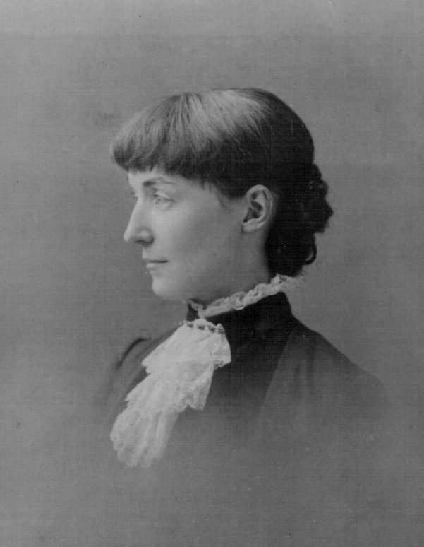
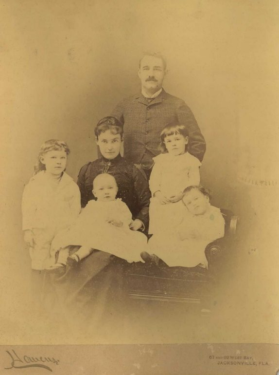
First, in 1885, was Robert, who with two of his brothers later served in Europe during WWI. Next, born in 1886, was William Cassat, then Ralph Elliott in 1888. The youngest son Neyle Habersham was born a year later in 1889. Their only daughter, Anne Caroline, came in 1890.
While up north, the family lived in Cornwall Cottage with grandmother Sue Ellen. Photographs from Robert's personal album confirm that the family accompanied him to Florida. And how did they travel between Pennsylvania and Florida? By private rail car!
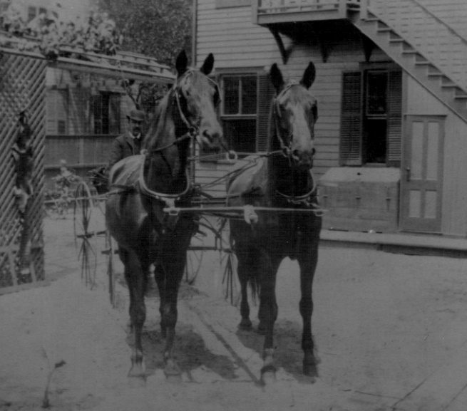
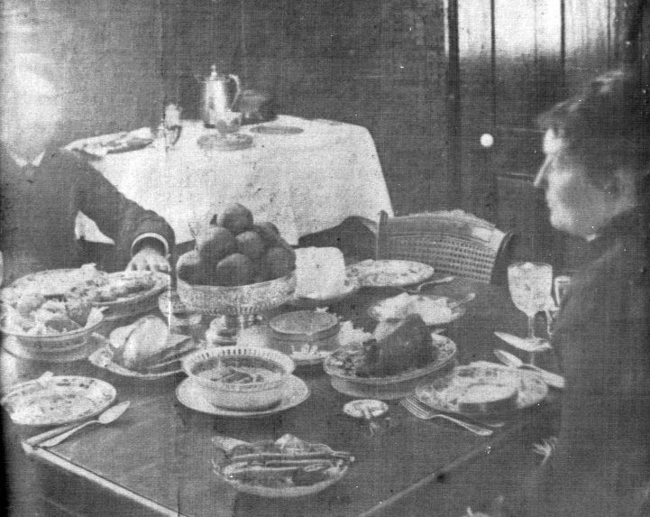
Traveling in Style
Beginning around 1880, Henry Plant had been known for moving about Florida in his private car, "Car 100," that served as his rolling office and quarters. In 1886 Henry Flagler specified the design of his own private rail car "The Rambler," built by the Jackson & Sharp Company of Wilmington, Delaware, for travel between his New York and Florida homes, among other destinations.
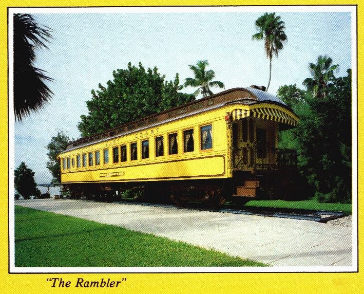
Soon after, in June of 1887, Coleman followed suit, contracting with the same company for his own private car, to be named "Cornwall." Its design imitated the details of another private car "Minerva," named for the wife of Asa Packer of Mauch Chunk (Jim Thorpe), Pennsylvania. Coleman took pains to ensure that the elegance of his car exceeded that of Flagler's "Rambler."
In addition to three staterooms, two bathrooms and a kitchen, the car had a wine cellar, parlor, and observation room. Interior features included walnut and oak paneling, mosaic flooring and carpeting, annunciators, chandeliers and other electric lights, down to the provision of china, linens and kitchenware. It was to be painted in the colors of the JT&KW railway.
Coleman was urgent to take delivery by October of that year for a "maiden voyage" with the family to Tampa to confirm every aspect of the car's intended luxury.
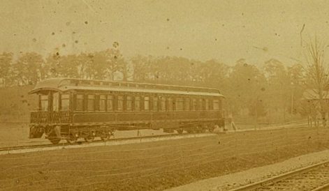
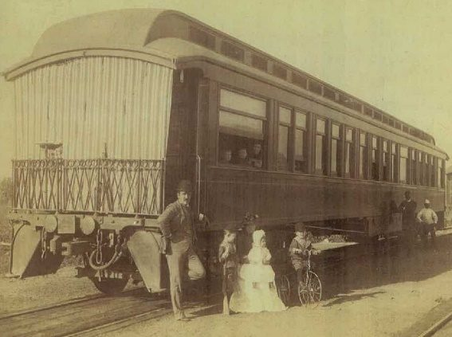
The car made many trips, including one to Niagara Falls in 1888 (a few months after the Pinkerton Affair in Cornwall).
His prized car is listed with the Delaware Bureau of Archives for the Jackson & Sharp Company, 1888. Unfortunately, he would not ride it to Saranac Lake in 1893, as it was among many lost assets.
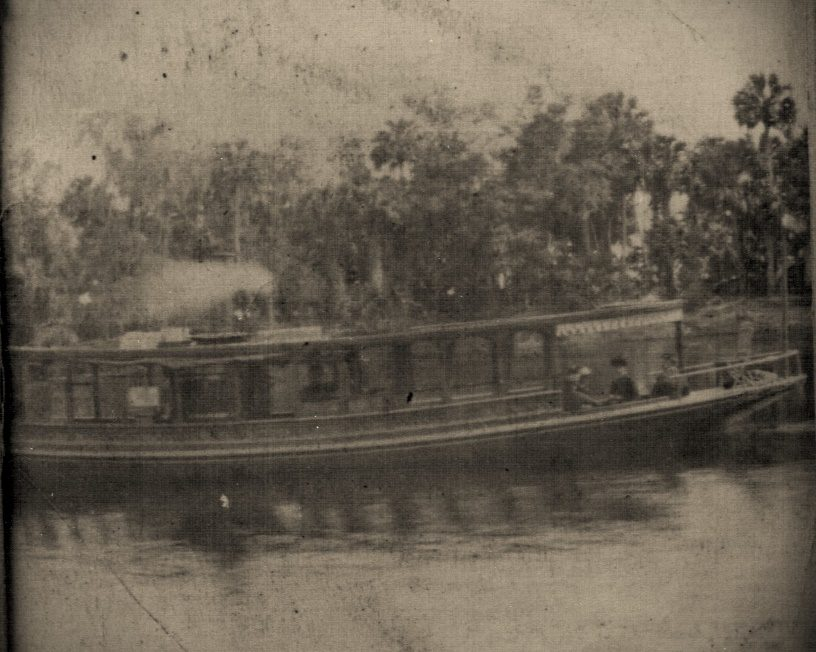
Following his Florida peers, Coleman also enjoyed traveling in style on the canals and St. Johns River on his boat, the "Seminole." In 1884-85 he corresponded with Pepgrass & Pine of Chicago regarding bids and costs for repairs. The work entailed repairs to the hull, boilers, and engine, and renovation of the cabin. The correspondence became quite testy when their costs escalated, having failed to negotiate a contract prior to commencing the work. Repairs were about $1,000 beyond the $2,500 estimate.
Coleman joined Philadelphia's "Corinthian Yacht Club," registering the Seminole (length 44, beam 7.5), ported in Jacksonville, and the "Sandy Fly" (length 16, beam 7.6), ported in Philadelphia.
Robert H. Coleman, Florida Landowner
Robert was interested in land as much as he was railroads. He and Edith investigated development lots, in April 1888 purchasing acreage in the "Spring Garden" tract of Volusia County, east of the St. Johns River. It had been part of the DuPon-Gaudry Grants from the Spanish Grants of 1807. Records show two purchases, 210 acres of lakefront for $20,000, and then another 168 acres he may have intended to subdivide and sell for profit.
On the lakefront property he had in mind building a great southern mansion, of the Spanish Renaissance style. Bear in mind "Cornwall Hall," his northern mansion, was also under construction at the same time in Cornwall for Edith and their new family; its exquisite architecture to rival that of his sister Anne's great mansion in Hyde Park, N.Y. Apparently one mansion would not suffice. Whether that was Edith's request, or Robert betraying his pursuit of extravagance, is not known.
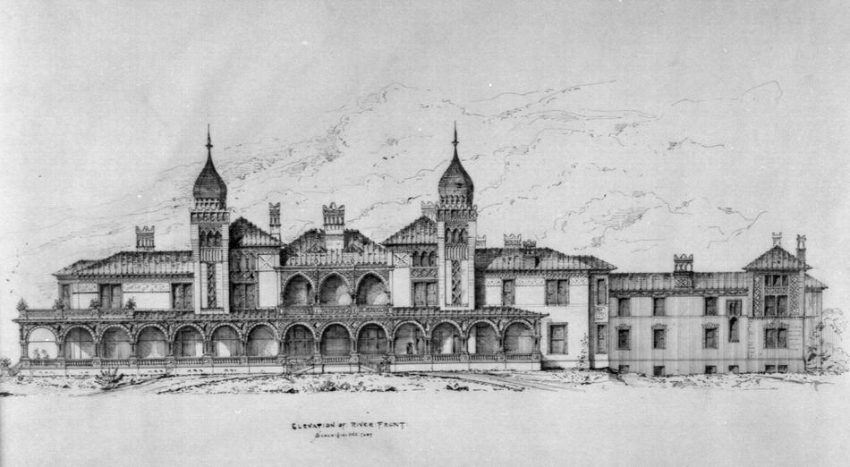
This southern mansion, designed by Hewitt Architects of Philadelphia, would rival that of Flagler's hotel, with its expansive features and long veranda. There is no record of it actually having been built, as Robert's finances were beginning to feel the strain late in that decade. Court records show that in 1893 he defaulted on the properties, which then transferred to his brother-in-law Archibald Rogers and Henry Kendall of Reading.
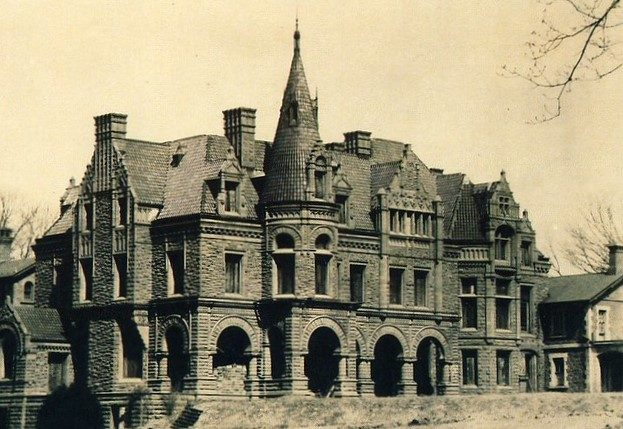
Disaster Unfolds
According to Federal Reserve History and other sources, the panic of 1893 was one of the worst financial crises in our history. It was triggered by a variety of factors: recession overseas, the McKinley tariff act, falling US gold reserves, increasing defaults on loans. Many banks throughout the country suspended operation. The Philadelphia and Reading Railroad was one of two major railroads that had collapsed, causing major unemployment, disrupting businesses and creating panic in the stock market. With the optimism and industrial growth of the previous two decades, businesses had over-extended themselves, borrowing money for expansion and unable to pay when banks called in loans. More than 15,000 businesses closed during the panic.
It is fair to say that Robert H. Coleman, swept along by the optimism of expansion, forgot the admonitions of his mentors. He also forgot the economic lessons his family had learned in recent decades. The family had been nearly insolvent in the late 1850s, at which time Artemas Wilhelm had been retained to manage their iron business. Early in the 1870s the Cornwall furnaces had been taken out of blast because Congress removed the tariffs that had enabled competition with the low price of iron from Europe. In mid-October 1873 Mother wrote to Robert in college to conserve his allowance: "Mr. Wilhelm was here this morning and looks very blue about money matters. I feel sorry for him. He is so conscientious in all he undertakes. It must be hard for him to stop the work on the Byrd Coleman [sic] (furnace) and blow out the others, but then there is no iron selling and there will be no use in making it."
Collapse
The Lebanon Daily News reported on August 8, 1893 that Coleman assigned his financial affairs "for the benefit of his creditors" to brother-in-law Archibald Rogers of Hyde Park and Henry T. Kendall of Reading, a long-time trusted agent. The article referred to a collection of both news reports and letters to the editor, mostly expressing sympathy for Coleman, still greatly beloved for his charity to Lebanon. The cause was attributed to his over-extension to the Jacksonville, Tampa and Key West railroad, compounded by the financial strains in the country.
A separate article from the day before reported the sale of "Coleman's vast interests" to the Lackawanna Iron Company of Scranton, for 3 million dollars. These assets included his 15/96th share of the ore banks, two anthracite furnaces in Cornwall, two Colebrook furnaces (in Lebanon), controlling interest in his Cornwall & Lebanon railroad and a 125 acre farm connected with the Anthracite furnaces. He retained his home in Cornwall, and the Colebrook estate (including Mt. Gretna) as well as two farms, one in Cornwall and one in Bismarck (Quentin). His net worth was estimated at $5.1 million (whereas previously his assets estimated at various times from $20 to $30 million), which was considered twice the amount to cover all of his debts.
Earlier Warnings
Previously, in July of 1892, the Lebanon Daily News reported that Robert H. Coleman had resigned as president of the JT&KW, the C&LRR, Lebanon Iron Works, and the Lebanon Trust and Safe Deposit bank. The reason given was Edith's ill-health. They were boarding their private "Cornwall" car for New York where they would board a French steamer "La Champagne" for Havre. Given the hopes for her improvement in France they estimated staying two or more years. Archibald Rogers and Henry Kendall, long-time associates, were to look after his affairs during his absence.
The Exodus
The story doesn't end there. Robert H. Coleman was only 37 when his financial empire collapsed.
Coleman had already moved his family out of Coleman Cottage and they were living temporarily in the Superintendent's house of the Anthracite Furnace in Cornwall. Then, according to reports, he loaded the family and some belongings in a carriage and headed out of town. In a Lebanon newspaper story (May 19, 1894, "Still Traveling Northward"): "Robert H. Coleman and family, who spent Thursday night at Pinegrove, stopped at the Eagle Hotel, Edward Hummel, Proprietor. Yesterday morning he started for Pottsville which he reached last evening."
A subsequent article (Lebanon Daily News, July 8, 1894) characterized their journey as a "pleasure trip overland, have reached the Adirondack mountains. Mr. Coleman writes that the trip has been an enjoyable one and that himself and family are enjoying excellent health."
Finally (Lebanon Daily News, 16 Oct 1894, "Sojourning at Lake Saranac"): "Robert H. Coleman and family, who have been spending the summer in the Adirondacks, have left there and are now sojourning at Lake Saranac. They will spend the winter there with other families of their acquaintance."
Our local newspapers maintained a rosy outlook for the Coleman family, seemed to forgive any failing that kept them away from Lebanon county, and expected their eventual return. Between the humiliation of failure, and growing concerns for Edith's health, it eventually became clear that their departure was permanent.
Robert H. Coleman never returned to Lebanon.
In the turmoil of his demise in 1893, Robert H. Coleman left Lebanon with his family and headed to Saranac Lake. "Sanctuary" speaks both to finding a place to suffer his humiliation, as well as to find help for the tuberculosis, or consumption that ailed both he and Edith.
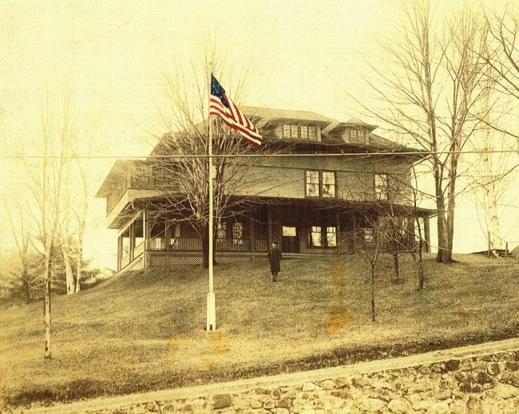
Why did he go to Saranac Lake? Why not the south, to the Georgia homestead? Too close to painful memories in Florida? Was it to be close to his sister Anne in Hyde Park, where his mother spent her final days?
The choice of the Adirondacks was not all that surprising. Coleman's mentor Artemas Wilhelm had been to the nearby springs of Saratoga in 1879 for health reasons. With the disease accounting for 1 in 7 deaths in the United States and Europe in the late 19th century, Saranac Lake was well-known as a treatment center.
Dr. Robert Koch discovered the tuberculosis bacterium in 1882. Dr. Edward Livingston Trudeau, himself suffering the disease and a visitor to Saranac Lake since the 1870s, opened his sanitorium in Saranac Lake in 1884. In 1903 he signed Edith's death certificate, with the cause of death "pulmonary tuberculosis (had the disease when I first saw her, 1895)." Presidents and other famous people found help at the institute and Coleman was likely one of its benefactors. The Trudeau Institute continues to operate today, researching infectious diseases such as COVID-19.
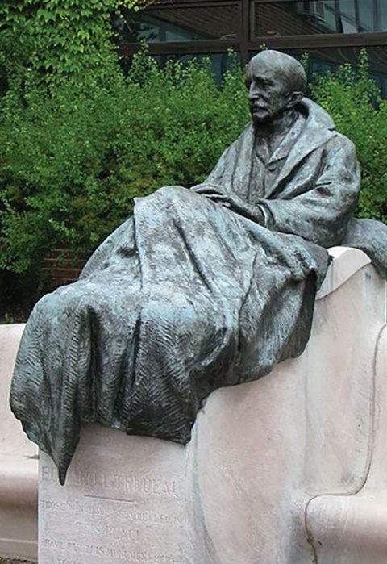
The details as to when Robert and Edith contracted the illness are unclear. There is some conjecture that the diagnosis of "TB" was often attributed to a wider range of respiratory illnesses. Lebanon county's questionable air quality with wood stoves, the ashes of iron furnaces and coal burning engines was likely detrimental to many. Furthermore, Robert was known for his continuous smoking of cigars.
The prescribed treatment was as much fresh air as possible. Rather than build a large sanitorium to house patients in close quarters, Trudeau's concept was distributing the patients among "cure cottages." Patients would rest outdoors in beds and chairs for eight hours a day on the front porches of their cottage.
Over time 900 cure cottages were erected. It was easier for Trudeau to convince his wealthy friends to sponsor the cost of an individual cottage, rather than joining a faceless pool of donors for a large facility. Others seeking treatment found it more cost-effective to build their own cottage rather than rent a room for a long period.
The Coleman cure cottage was designed by William L. Coulter of the Renwick, Aspinwall & Renwick architectural firm, for whom Coleman is described as his "first famous client." Coulter went on to design many of the distinctive rustic camps around Saranac Lake and Lake Placid.
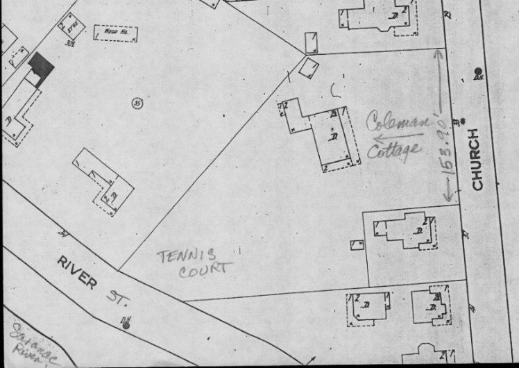
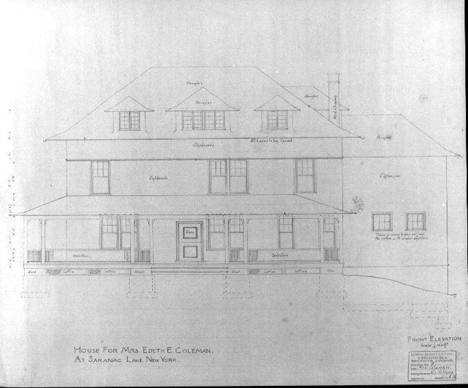
The floor plan included a northwest wing for kitchen, laundry, and servants' quarters. The cottage was on a rise at 33 Church Street, between Church and River Streets above Lake Flower, on the Saranac River.
St. Bernard's Roman Catholic school would be built a few years later on the property to the west on River Street. The house was torn down around 1934 when St. Bernard's bought the property, which is now a school playground. One more of Robert H. Coleman's homes ceased to exist.
The Colemans were members of St. Luke's Episcopal Church on Main Street. Trudeau had helped establish the church in the 1870s, serving as fundraiser, treasurer and church warden for 38 years. It is possible that Coleman's Episcopal roots also played a role in connecting him to Trudeau and Saranac Lake.
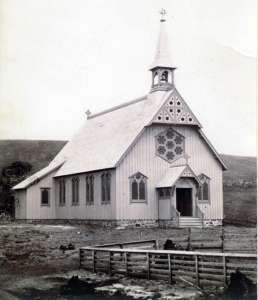
Comfort in the Mountains
It may not have been humiliation that sent Robert H. Coleman to the north country. Rather than dive back into his economic conquests, he may have finally heeded the voices of his past mentors and the fresh memory of his mother's death the previous year. Consistent with his giving and generous personality, the hard lesson of default may have convinced him to turn to a quieter life and attend to those closest to him.
Coleman's motivation seems two-fold during this period: First providing a comfortable place for Edith to convalesce; secondly, providing a suitable environment for their children.
The Coleman children enjoyed a comfortable life growing up in Saranac Lake. Many of the photos in Robert's album are of the family activities like tennis matches and boating. The spacious house featured a billiard room and other comforts.
Three sons would serve in the military in Europe during WWI. One later went on to work on the development of the Panama Canal. Daughter Anne Caroline Coleman would be married at their Episcopal church in 1912.
A Lonely Man?
Tragedy continued to follow Robert. He again suffered the loss of a spouse, as Edith died in 1903. Son Ralph died in 1910 of suicide, having dropped out of Yale College. And his oldest son Robert died in France of pneumonia while serving in the armed forces.
Despite tragedy Robert H. Coleman remained active. He continued to enjoy favorable press after retiring to Saranac Lake. He enjoyed visits with various well-to-do friends, including a retreat to the Ampersand Hotel in 1896 with the Anne Rogers family and other socialites.
Saranac Lake organized the Pontiac Club to promote outdoor sports, for which Robert served as vice president.
Nor had he been forgotten here in Lebanon county. In 1913 a group of businessmen from Lebanon and Cornwall made the trip to Saranac Lake to spend ten days with Coleman. And in 1920 he was elected honorary member of the vestry of St. Luke's Episcopal Church of Lebanon.
Robert H. Coleman, Cigar Aficionado
In Richard Noble's account "A Touch of Time," Robert was frequently seen pacing the front porch of his cottage, smoking an ever-present cigar. He would be "going for a walk," as Coleman described it, though never leaving his porch.
But he did get out — for a while he tried running a cigar store in Saranac Lake, featuring fine Cuban cigars. The business fared no better than his railroad ventures and he let it go.
Robert H. Coleman, Bird Man
Coleman was a bird watcher, having taken considerable time to wander the woods of the Adirondacks. The 1921 "A History of the Adirondacks" by Alfred L. Donaldson contains in Appendix J a "List of Adirondack Birds — Compiled by Robert H. Coleman," who is credited with providing a list of birds "easily found and recognized" in the mountains. The list spans five pages, enumerating 153 "residents" by common and Latin names, including warblers, vireos, thrushes, woodpeckers, owls, and others.
Bird-watching was not a hobby newly-acquired during his isolation. In early 1879 an acquaintance from Chicago, whom he met briefly on a train enroute to Savannah, corresponded with him regarding a particular bird, and recommending a book "Birds of North America" by Elliott Coues (Boston, 1877), $7.50. This treatise probably inspired his own efforts in 1921.
A number of ornithology books and stuffed birds are mentioned in his last will and testament.
Robert Coleman, Baseball Man
He also had a wonderful opportunity to nourish his passion for baseball. Previously had been his years at Trinity and then organizing "railroad teams" in Cornwall, himself at first base. Directly across the street from his Saranac Lake cottage (in the Santonani apartment complex, established 1914) resided baseball great Christy Mathewson, who had pitched 17 seasons for the New York Giants.
Mathewson contracted tuberculosis after working with chemical warfare agents in World War I and spent much of the rest of his life in Saranac Lake from 1919 until his death in 1925. Another common bond between the two men, Mathewson was known for his devout Christian faith, refusing to play ball on Sundays.
One can imagine that baseballer Robert Coleman enjoyed his visits with Christy Mathewson.
Finally, Robert H. Coleman, Train Man
He may have kept his finger on the pulse of another old passion, trains. He could not help but notice the new rail station in Saranac Lake, built in 1892. Its architecture is reminiscent of his own Cornwall & Lebanon station in Cornwall.
His photo album provides no evidence of his travels. Train travel may have been his preferred mode of transportation, although automobiles were possible. According to all reports he never returned to visit Cornwall or Lebanon, but he did visit his sister in Hyde Park routinely.
In 1903 he had escorted Edith's casket by train as far as New York, not strong enough to tolerate the full journey (according to Richard Noble, citing the Lebanon Daily News).
In late 1929 being in ill-health Robert began staying with his sister Anne Rogers, herself widowed when her husband Archie died the previous year. Robert would survive tuberculosis but died of stomach cancer at age 73. His final train ride followed his death March 15, 1930, his casket being transported to Laurel Hill Cemetery, Philadelphia.
Robert H. Coleman, His Legacy
It remains a challenge to understand the two versions of Robert H. Coleman in that decade prior to 1893. At times he was in two places at once, mentally if not physically, saddled with the cares of both. His life in Cornwall and Lebanon seemed wildly productive and effortless. One thousand miles away, Florida became for him a swamp of cares, mired in the details of integrating multiple small railroads, leveraging financial instruments, and acquiring a million acres or more of land for some unknown and future plan.
In the end his legacy seems neither the iron industry, his passion for railroads nor a grateful Lebanon, but simply a life well-lived. He enjoyed seeing his children grow up; he knew the comfort of a life-long relationship with a doting sister who understood him and loved him until the very end. He had soaked in the solitude of the Adirondack Mountains. He had suffered tragedy again and again, but without regret, knowing that he had played the game. He had lost but picked himself up to play another day.
Reflection
The holiday season upon us, and with scenes of Bedford Falls-turned-Pottersville in Jimmy Stewart's "It's a Wonderful Life" (Frank Capra, 1946) playing in our heads, imagine how Lebanon county would have fared if things had gone differently in 1883.
That was the year, early in Robert H. Coleman's Florida business venture, that he was doubting himself.
It was a watershed moment, but the angel would not earn his wings. Cautious voices urged him back to safety, but he jumped off that bridge anyway. What if he hadn't?
The many families of Coleman's bank would not have lost their savings.
Lebanon would be a much larger and more prosperous city, with a history in the steel industry that rivals Pittsburgh. Coleman Stadium would be home to the Steelers.
There might still be a railroad passing through Cornwall and Mt. Gretna. Though hard to imagine it being any better, Mt. Gretna would not be the same. Our gain would have been Saranac Lake's loss.
Cornwall's great mansion would still stand in the center of the Borough, inhabited by members of the Coleman family for the last 135 years. Coleman wealth would prosper this county in unforeseen ways.
With the help of William H. Barnum and his own wealth and personal charisma, Robert H. Coleman might have vaulted into national politics, even serving as president of the United States at the dawn of the 20th century.
Merry Christmas 2023.
Dedicated to Linda and our children.
The John and Margery Feitig collection at the Cornwall Iron Furnace.
Insights from author James Polczynski; local historian Michael Trump; Dr. Terry Heisey, Principal Organist and Director of Music at Saint Luke's Episcopal Church; Michael Emery, Site Administrator of Cornwall Iron Furnace.
Originally published as a five-part series on LebTown, November 30, 2023 – January 4, 2024.